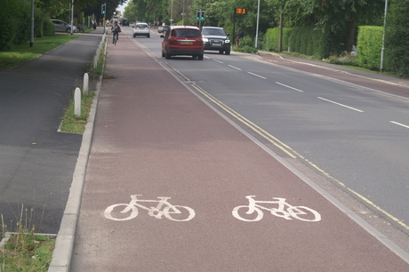

4 Layer descriptions
The CyIPT website is an interactive map presenting a range of different layers.
4.1 Existing infrastructure
The Existing Infrastructure layer has three modes (Cycle infrastructure, Speed limits, Footways). These modes are intended to help the users understand the current level of provision for active modes, and can be selected using the dropdown menu illustrated in Figure 4.1.
Figure 4.1: Dropdown menu illustrating available modes in the existing infrastructure layer.
For each mode, the underlying data is taken from the Open Street Map (OSM), which is then passed through a cleaning process to correct errors and fill in any missing data.
If any values are incorrect in CyIPT (for example an incorrect speed limit) clicking on the road will show a popup including an “Edit in OSM” button. This button will take you to the same road in the OSM website where you can make corrections. These corrections (and any other updates) will be incorporated into CyIPT next time the data is rebuilt.
4.1.1 Cycle infrastructure
The cycle infrastructure mode shows physical cycling infrastructure such as cycle lanes and tracks (Figure 4.2. It does not show signposted cycle routes (e.g. national cycle network) where there is no physical infrastructure.
Figure 4.2: The ‘Cycle infrastructure’ mode in the Existing infrastructure layer.
This layer shows what CyIPT will consider existing infrastructure when calculating the costs of new/upgraded cycle infrastructure.
4.2 Speed limits
The speed limits mode shows the maximum speed limit in miles per hour.
4.3 Footways
The footways mode shows the presence of footways (pavements) on the side of the road.
4.4 Schemes
The Schemes and presents the results of the toolkit for route segments, divided-up into geographically cohesive entities (see Figure 4.3. Schemes can be composed of a variety of interventions, which can be:
- A recommendation for new/upgraded cycle infrastructure, or
- Multiple infrastructure types (only the most common is named)

Figure 4.3: The Schemes layer
Schemes covers a defined area providing a route or part of a network. Each scheme is derived from the recommended infrastructure layer (see below) by excluding any roads where the recommended level of cycle infrastructure is equal to or exceeded by the existing infrastructure. Recommendations are then grouped into schemes, to convert recommendations that may only be a few tens of metres into a coherent route or network. Schemes below a threshold length are then excluded.
This final list of schemes is evaluated by estimating the increase in cycling due to the new infrastructure and a range of benefits derived from increase cycling. The benefits categories within CyIPT are:
- Health benefits from increase exercise
- Benefits from reduced absenteeism due to improved health
- Benefits from improved journey quality – Not yet implemented
- Benefits from reduced road accidents – Simple implementation
- Benefits from reduced noise – Not yet implemented
- Benefits from improved air quality - Not yet implemented
- Benefits from reduced greenhouse gas emissions
- Benefits from reduced road traffic congestion - Simple implementation
- Benefits from indirect taxation - Not yet implemented
- Benefits from time savings - Not yet implemented
As CyIPT is still in the proof of concept stage, not all the benefits categories have been fully implemented. Therefor CyIPT is likely to underestimate the benefits for a cycle scheme for a given increase in number of cyclists.
The benefits for the scheme are then compared against the total estimated cost of the scheme to provide benefit cost ratios for each scheme. Schemes are colour coded based on their benefit cost ratio.
The filters within the schemes layer can remove schemes from the map based on Cost, Benefit Cost Ratio, and Total Benefits.
4.5 Recommended infrastructure
The recommended infrastructure layer presents CyIPT’s recommendation for the type of cycle infrastructure required on each road segment. Roads and paths where no cycle infrastructure is required are not show. The recommendations do not take account of any existing infrastructure; therefore, the recommendations may suggest that existing cycle infrastructure remain, be upgraded, or in limited cases be downgraded.

Figure 4.4: The recommended infrastructure layer.
It is important to understand that the CyIPT recommendations are based on cycling levels in the 2011 census, and it may therefore under-represent current cycling levels and infrastructure requirements. For more detail on the recommendation process, see the Technical Details section below.
Appropriate cycle infrastructure is based on guidance from Highways England IAN 195/16 (Highways England 2016). Interventions are recommended for each segment based the following criteria:
- Whether the route is on road or off road (e.g. paths)
- The speed limit
- The motor traffic level
- The number of cyclists using the road (based on PCT Census 2011 scenario)
Using this information CyIPT makes one of seven possible recommendations. Common infrastructure types are illustrated in the figures below:
- None
(Not shown) no specific cycling infrastructure is required.
- Cycle Lanes
A painted line on the roadway divides bicycles from other traffic:
- Cycle Lanes with light segregation
Similar to cycle lanes but batons or armadillos are added long the line to reinforce the separation between cyclists and motor traffic:
- Stepped Cycle Tracks
Cyclists travel on a slightly elevated lane, above the road traffic but below the pavement:

- Segregated Cycle Track
Cyclists travel in a separate lane physically separated from motor traffic by a hard barrier:
- Cycle Streets
These very quiet roads are primarily designed for cycling and walking while still allowing low speed motor traffic:
- Cycle Lane on Path
(Off Road Only) cyclists are separated from pedestrians by a painted line.
- Segregated Cycle Track on Path
(Off Road Only) cyclists are separated from pedestrians by a hard barrier.
4.6 Road widths
The road width layer has two modes (road width, width status). Road width
The road width layer shows and estimate of the road with based on the OSM. The calculation use standard lane widths and information on the number of lanes and footways to estimate the total width of the carriageway. Width status
The width status layer compares the estimated width of the road with any proposed new cycling infrastructure to width of the road as measured from the Ordnance Survey MaterMap. This mode helps highlight locations where road space is limited and space reallocation may be required to provide new cycling infrastructure.
4.7 Propensity to Cycle Tool
The Propensity to Cycle Tool layer takes data from the Propensity to Cycle Tool (PCT) (see www.pct.bike) and provides an updated version for CyIPT. The layer is analogous to the PCT LSOA route network layer, which can also be accessed as a base map though CyIPT. CyIPT adds value to the PCT data by assigning cycling potential to OSM elements, making this layer more detailed and interactive than the equivalent LSOA layer in the PCT (see Figure 4.5).
Figure 4.5: The Propensity to Cycle Tool layer.
The PCT layer supports the same five scenarios as the main PCT tool, however only the 2011 census scenario is used within CyIPT. The PCT layer includes a value based rate limiting feature.
The PCT scenarios provide a useful way to cross validate the CyIPT uptake predictions. CyIPT typically predict that new infrastructure will increase cycling more than the Government Target scenario, but less than the Go Dutch scenario. Forecasts outside this range should be subjected to additional scrutiny. CyIPT makes no account for ebikes, and therefore the PCT ebike scenario is not applicable, however it is provided in the interest of completeness.
The PCT team is currently working on updated version of the PCT for Wales, and to include travel to schools. These are not currently implemented within CyIPT but may be added in the future.
4.8 Traffic counts
The traffic counts layer provides an overview of road traffic levels on selected roads (see Figure 4.6). The data source is DfT traffic count data, which CyIPT then matches to the road network. As the DfT data is not provided for all locations in all years, CyIPT takes the most recent available year. As illustrated in Figure 4.6 DfT data has good coverage of the strategic road network, but more limited coverage of minor roads.
Figure 4.6: The traffic layer.
4.9 Collisions roads
This layer takes the Stats19 data on road collision between 1985 and 2015 and matches collisions that did not occur at a junction to the nearest road (see Figure 4.7). The layer provides a count of the total number of collisions that occurred on that road. These can be filtered by the severity of collisions (slight, serious, fatal) and severity of bike casualties (slight, serious, fatal).

Figure 4.7: The Collisions Roads layer. This layer should be used in conjunction with the Collision Junctions layer.
4.10 Collisions junctions
This layer takes the Stats19 data on road collision between 1985 and 2015 and matches collisions that did occur at a junction to the nearest junction (see Figure 4.8). The layer provides a count of the total number of collisions that occurred on that road. These can be filtered by the severity of collisions (slight, serious, fatal) and severity of bike casualties (slight, serious, fatal).
Figure 4.8: The Collisions Junctions layer. This layer should be used in conjunction with the Collision Roads layer.
4.11 Collisions points
This layer shows the locations of all collisions in the Stats19 data from 1985 to 2015, it can be filtered by year and severity (see Figure 4.9).
Figure 4.9: The Collisions Points layer.
References
Highways England. 2016. “Interim Advice Note 195/16: Cycle Traffic and the Strategic Road Network.” Interim 195/16. Highways England. http://www.standardsforhighways.co.uk/ha/standards/ians/pdfs/ian195.pdf.